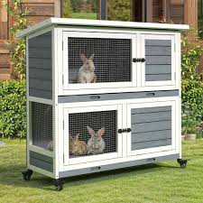

25th Set
Fretting – sad
Abrading – scrub it vigorously
Staunch (v) – to stop something happening or to stop liquid, especially blood, from flowing out
Staunch (adj) – loyal
27th Set
Flare (v) – to burn for a short time with a sudden bright flame
Flare (adj) – becoming wider towards the bottom
28th Set
Acute – dire
Inimical – harmful
Advertent – paying attention; heedful
29th Set
Conciliatory – showing willingness to end a disagreement or make someone less angry
30th Set
(Add synonyms here)
33rd Set
Inbred – offspring from mating between individuals with a recent common ancestor
Premonition – a feeling that something unpleasant is going to happen
34th Set
Ebullient – cheerful and full of energy.
Roguish – mischievous

flagrant - atrocious
37th set
Fatuous - silly and pointless
38th set
insidious - (of something unpleasant or dangerous)
gradually and secretly causing harm:
nasty - unpleasant
Baneful - causing harm or trouble
fuzzy - not clear
39th set
Revile - abuse
41st set
effusive -showing or expressing gratitude,
pleasure, or approval in an unrestrained or heartfelt manner.
Blandishment - flattery
hutch

decadence - low moral standards and behaviour
43rd set
Castigate - reprimand severly